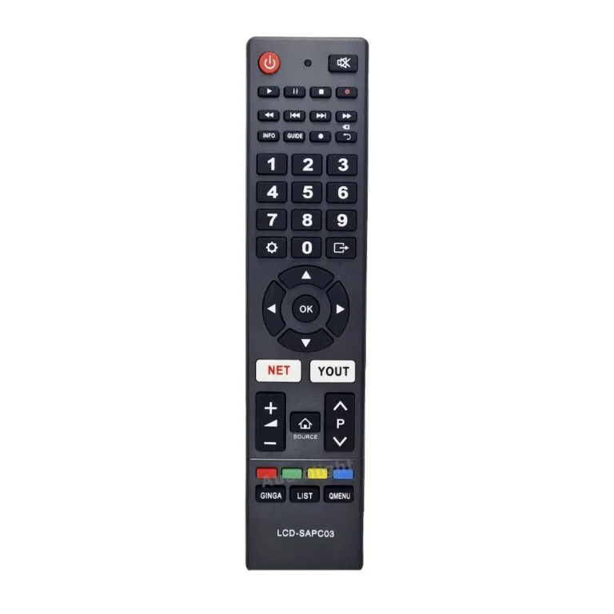
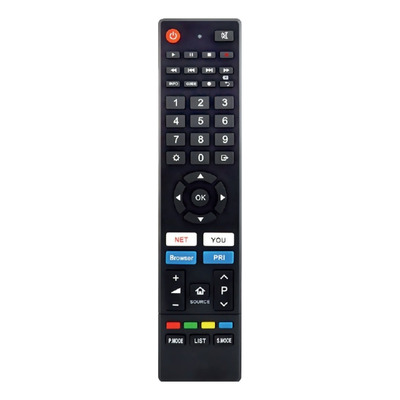
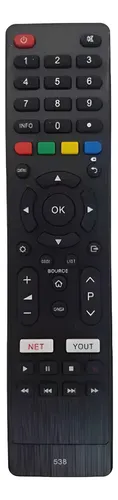
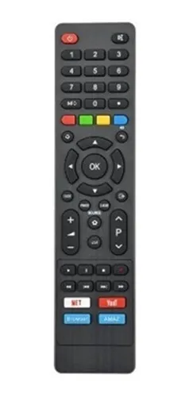
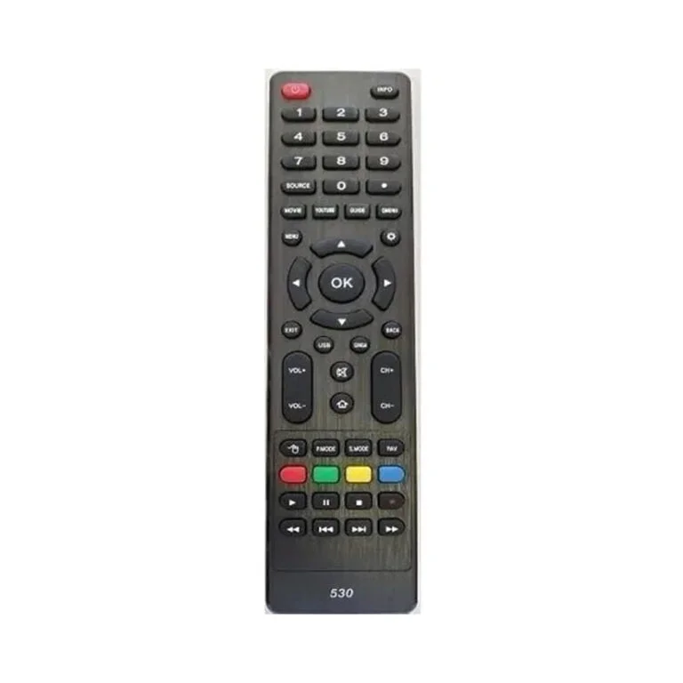

<!-- ONN - RCA - PHILCO - SANYO  -->
<div class="mb-8">
    <h2 class="text-2xl font-semibold mb-4 custom-bg">  ONN - RCA - PHILCO - SANYO </h2>
    <div class="horizontal-scroll">
        <div class="item p-2">
            
            <p class="mt-2 text-center">681</p>
        </div>
        <div class="item p-2">
            
            <p class="mt-2 text-center">681 con mas botones</p>
        </div>
        <div class="item p-2">
            
            <p class="mt-2 text-center">681 ALT</p>
        </div>
        <div class="item p-2">
            
            <p class="mt-2 text-center">1564</p>
        </div>
        <div class="item p-2">
            
            <p class="mt-2 text-center">1527</p>
        </div>
        <!-- Más controles -->
    </div>

    <br/><br/><br/><br/>
                <footer>
                    <p><strong>MODELOS COMPATIBLES CONOCIDOS: </strong>  
                                           RCA X32SM, RCA XF39CH </p>
                </footer>
</div>